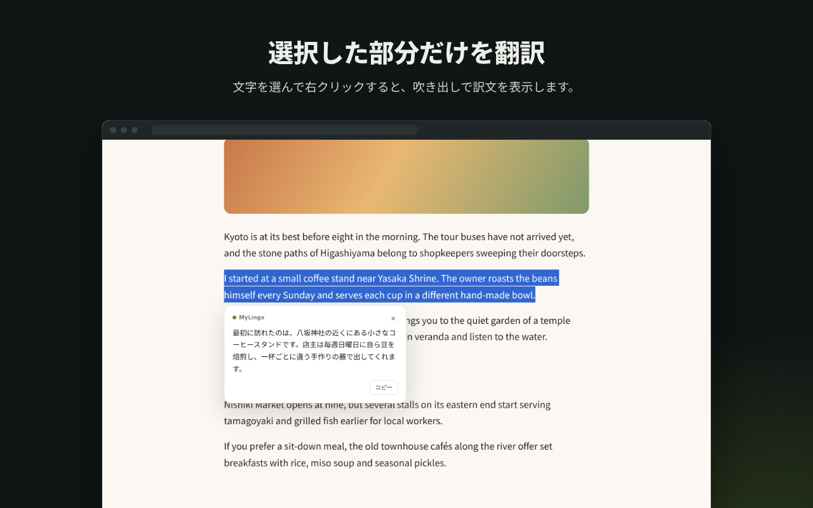

Langria
Langria


Chrome 拡張機能


ページ丸ごとも、気になった一文も。
読んでいるページをワンクリックでそのまま翻訳。メニューや画像は崩れません。一部だけ知りたいときは、選んで右クリックすれば吹き出しで即座に訳が出ます。
- 画面に見えている部分から先に訳し、残りはスクロールに合わせて翻訳。
- Alt+Shift+T でいつでも一瞬で原文へ切り替え可能。
- ChatGPT・Claude・Gemini を自由に切り替え、モデルもサービスごとに選択。